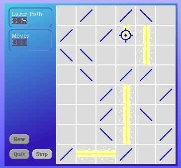

We will have to either adjust how the laser beam is drawn, the offsets, or adjust the position of the target cell. If we adjust the position of the target cell then we may still have an alignment problem when the laser beam meets at the mirrors. If we adjust the drawing of the laser we may still have an issue with alignment at the mirrors.
So it seems we will be served best by working on the laser beam on our mirror cells before we correct this.
However, there is a refactoring opportunity we should take. There's a lot of commonality in the code for both the target and blank cells when it came to drawing the laser beam. Let's clean that up.
The #renderLaserVertical and #renderLaserHorizontal methods are identical between the blank cell and target cell. Copy the methods to the common superclass CellRenderer and then delete the methods from the two subclasses.
The methods #renderLaserVerticalCenter, #renderLaserVerticalSplatter, #renderLaserHorizontalCenter and #renderLaserHorizontalSplatter are also identical between the two classes. Copy these methods up to the CellRenderer class and then delete them from the BlankCellRenderer and the TargetCellRenderer.
Compare the methods #renderLaserHorizontalMask:color: in the target cell and blank cell classes. Here's the blank cell version.
renderLaserHorizontalMask: aMaskForm color: aColor
| cellPosn scaledBeam scale trimmedBeam offset |
cellPosn := self offsetWithinGridForm.
scale := CellRenderer cellExtent * 6.
scaledBeam := aMaskForm scaledToSize: scale.
trimmedBeam := Form extent: (CellRenderer cellExtent x)@(scaledBeam height) depth: scaledBeam depth.
scaledBeam
displayOn: trimmedBeam
at: 0@0
clippingBox: trimmedBeam boundingBox
rule: Form paint
fillColor: nil.
offset := 0@(4 + (CellRenderer cellExtent y - trimmedBeam height) // 2).
trimmedBeam
displayOn: self targetForm
at: (cellPosn + offset)
clippingBox: self targetForm boundingBox
rule: Form oldPaint
fillColor: aColor
The target cell code...
renderLaserHorizontalMask: aMaskForm color: aColor
| cellPosn scaledBeam scale trimmedBeam offset masked |
cellPosn := self offsetWithinGridForm.
scale := CellRenderer cellExtent * 6.
scaledBeam := aMaskForm scaledToSize: scale.
trimmedBeam := Form extent: (CellRenderer cellExtent x)@(scaledBeam height) depth: scaledBeam depth.
scaledBeam
displayOn: trimmedBeam
at: 0@0
clippingBox: trimmedBeam boundingBox
rule: Form paint
fillColor: nil.
offset := 0@(4 + (CellRenderer cellExtent y - trimmedBeam height) // 2).
masked := self maskOffHorizontalOn: trimmedBeam.
masked
displayOn: self targetForm
at: (cellPosn + offset)
clippingBox: self targetForm boundingBox
rule: Form oldPaint
fillColor: aColor
The only real difference is that the target cell creates another mask form and then uses that new mask for the final drawing. It would be a simple matter to write the #maskOffHorizontalOn: method for the blank cell and have it answer the original mask. If we did that then we could use the same code for the #renderLaserHorizontalMask:color: method in the two subclasses.
Here's the new #maskOffHorizontalOn: instance method for the BlankCellRenderer.
maskOffHorizontalOn: aMask
^aMask
Now we can copy the version of #renderLaserHorizontalMask:color: that the target cell class was using and put it in the CellRenderer class and then delete the methods from both the subclasses. Be sure to leave the #maskOffHorizontalOn: as it exists on the target cell renderer class.
We can do the same thing for the vertical methods now. Add a new instance method #maskOffVerticalOn: to the BlankCellRenderer.
maskOffVerticalOn: aMask
^aMask
Copy the version of the #renderLaserVerticalMask:color: method from the target cell renderer up to the common super class CellRenderer and then delete it from both the blank and target cell renderers.
As a check, turn the laser off and on on our LaserGame morph and verify that everything still works as expected.
Save your work as version 9.